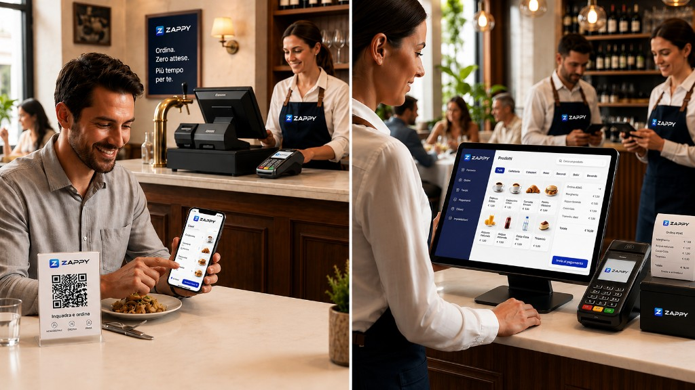

Più entrate, stessi metri quadri
Meno attriti al pagamento significa turni tavolo più rapidi in fascia critica. Il digitale suggerisce combinazioni e secondi round senza pressione sul cliente.
Valore misurabile
Zappy risolve problemi da ristoratore: velocità, chiarezza, controllo. E lo fa con un ecosistema che sembra già maturo, perché è pensato come prodotto enterprise, non come esperimento.
Meno attriti al pagamento significa turni tavolo più rapidi in fascia critica. Il digitale suggerisce combinazioni e secondi round senza pressione sul cliente.
Il personale smette di essere un “relay” di comande. Resta dove crea valore: accoglienza, consiglio, gestione delle eccezioni.
Menu curato, pagamento moderno, coerenza visiva: il cliente percepisce un locale che investe in qualità anche prima del servizio.
Margini, bestseller, orari: informazioni operative per chef e titolari — non vanity metrics da social.
Ti diamo strumenti digitali potenti ma facili da usare: il cliente scansiona il QR, ordina, paga dal tavolo e l'ordine arriva in automatico al bar o in cucina.
Nessuna app da scaricare, nessun gestionale complicato: solo un flusso chiaro che si integra con il modo in cui lavori già oggi.
Con Zappy dai ordine alle comande, riduci gli errori e lasci che il personale si concentri sull’esperienza del cliente, non sulla gestione di scontrini e bigliettini di carta.
Ogni funzionalità è pensata per rendere semplice il lavoro dello staff e allo stesso tempo far percepire il tuo locale come moderno, curato e professionale.
Per chi è
Zappy è la scelta giusta se vuoi un sistema integrato: app cliente, strumenti sala, admin e hardware che non ti lasciano con mezze integrazioni.

Raccontaci il tuo locale: ti mostriamo come Zappy si adatta a volumi, layout e organizzazione cucina.
È per chi vuole un locale più veloce, più ordinato e più memorabile. Un sistema che migliora il servizio, alleggerisce il personale e fa percepire il tuo brand come moderno e avanti.
Ogni dettaglio è progettato per far sentire il cliente seguito, coinvolto e invogliato a tornare.
Ordini più chiari, meno attese al bancone, meno confusione per lo staff e più fluidità nei momenti di punta.
Dati, ordini, flussi e strumenti riuniti in un ecosistema unico, semplice da gestire.
Zappy fa percepire il tuo locale come curato, innovativo e professionale, senza snaturarne lo stile.